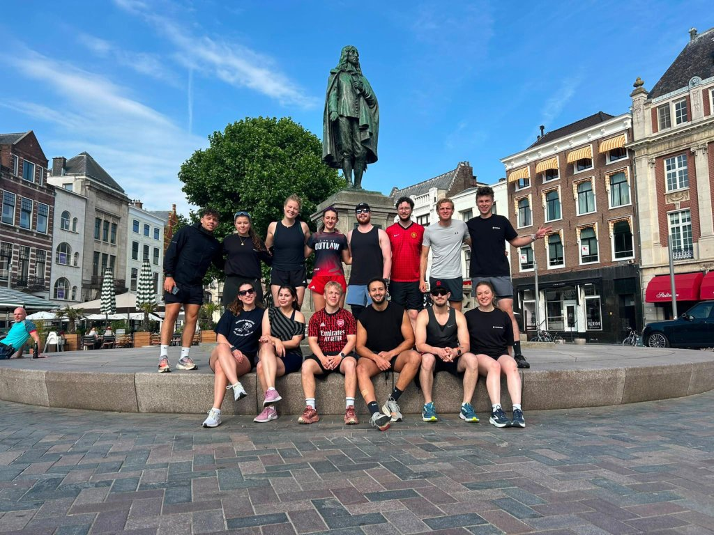
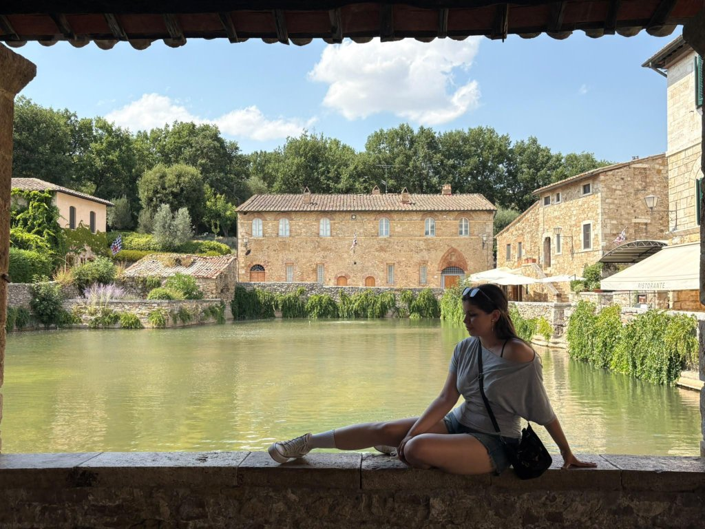
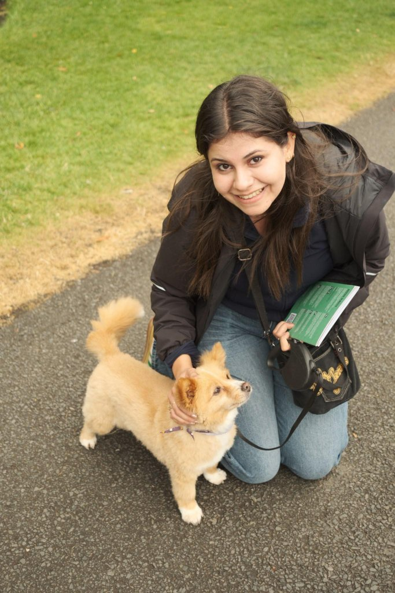

Get to Know Me
The real me
There's more to me than case studies and Figma files. Here's what I'm actually like outside of work.
Running club
I'm part of a running club in The Hague, and I'm the one who started our 10K runs every Thursday afternoon.

Books & writers
I'm a huge Charles Dickens fan; I read his books constantly as a kid. I'm also drawn to the classics: Edgar Allan Poe, Dostoevsky, Jane Austen. And when a series is good, I read the books, not just watch the movies: Lord of the Rings, Harry Potter, The Hunger Games, and Maze Runner all got the full treatment.
Movies & fandoms
Tim Burton's films are basically a personality trait of mine at this point (you may have noticed). Beyond that, I'm a huge Spider-Man and Marvel fan, and I'll always make time for Lord of the Rings, Harry Potter, The Hunger Games, and Maze Runner.
Music
My favorite band is The Doors, hands down; I even own a book with all their songs. Beyond that: Nirvana, Pixies, The Rolling Stones, Metallica, and a lot more old-school sound.
The nerdy side
I'm a bit of a nerd underneath the design work: I've got a genuine thing for soldering and technology in general.
Travel
Traveling is where I feel the most alive. Give me a new city, a new view, and I'm happy.


And when I'm not running, reading, traveling, or geeking out over a soldering iron, there's a good chance I'm out on a walk with a dog.